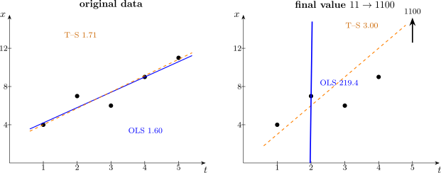

8.3 The Theil–Sen Slope
Mann–Kendall says whether there is a trend. It does not say how big it is. The matching estimator is due to Theil and Sen: take the slope between every pair of points and use the median of them.
\[\widehat {\beta } = \operatorname {median}\left \{ \dfrac {x_j - x_i}{t_j - t_i} \ :\ i < j \right \}.\]
There are \(\binom {n}{2}\) such pairwise slopes. Because the estimator is a median, it has a breakdown point of about \(29\%\) — roughly three observations in ten can be arbitrarily corrupted before the estimate is destroyed, against a breakdown point of \(0\) for least squares, where a single bad point suffices.
The pairing of Mann–Kendall with Theil–Sen is deliberate: both depend on the data only through pairwise comparisons, so the test and the estimate agree with one another. In particular \(\widehat {\beta }\) and \(S\) always carry the same sign.

Questions on this section
Stuck on something here? Ask below and it stays attached to this topic.